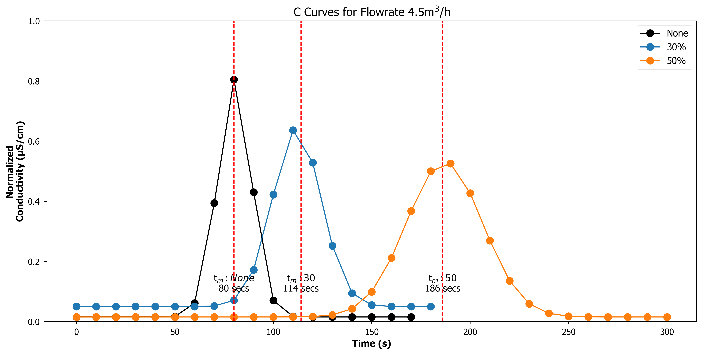
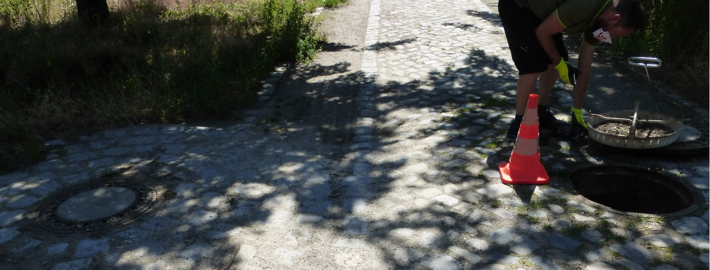
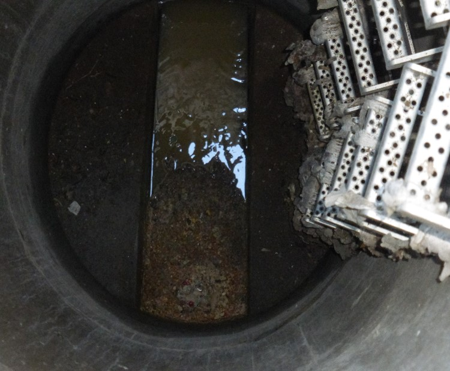
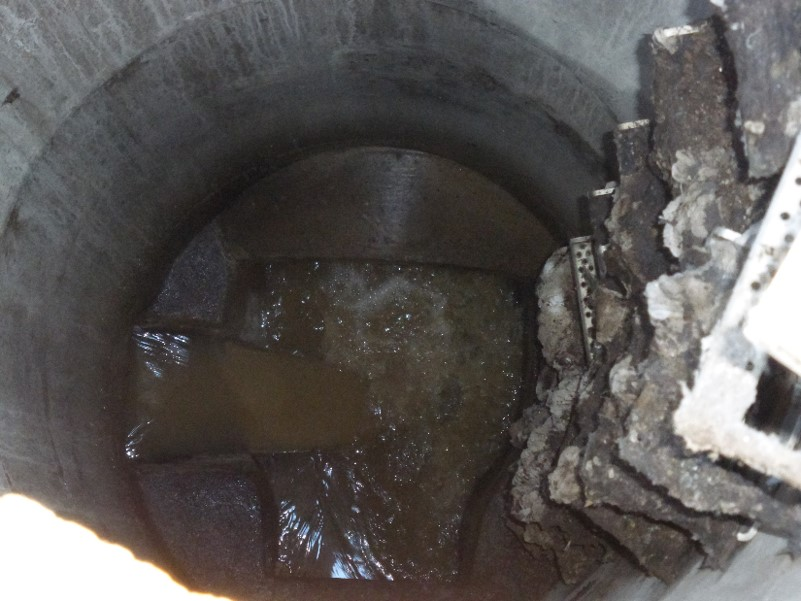

Mitigation Strategies for Odour and Corrosion in Sewer Systems
Pilot Plant Studies
Research Overview

- To investigate the intermittent application of a biological agent that deactivates(SRB) in sewer biofilms
- To optomise nitrate dosing based on the dosing point location
- To evaluate online liquid- and gas-phase H2S sensors for improving the monitoring of mitigation strategies
Supporting Pilot Plant Investigations
- Residence time distributions
- Sulphide build-up in the pressure sewer
- Key parameters related to sulphide formation
- Understanding the influence of quiescent conditions
- Air flow in gravity sewers
Additional experiments
- Onsite sulphide measurements
- Calibration UV spectrometer (TriOS) – Multivariate calibration procedures
- Wastewater biodegradability – COD Fractions


Background: Sewer Sytems Components and Interfaces


Experimental Setup

- Nitrite and HCL was dosed simultaneously at the inlet
- HCL demand based on acid capacity and titration curves
- 4.9 mmol L−1 H+ → pH of 6
- Intermittent dosing


Flow rate: 4.5 m3 h−1 →
0.16 ms−1
Baseline Sulphide Monitoring

An Example of FNA Dosing Event

- Dissolved sulphide <0.3 mg L−1
- In some cases H2S in the gas phase > 5 ppm
- Occurrence of heterotrophic denitrification
- increase pH
- reduction in nitrite concentration
- higher COD removal rates
- sharp nitrite reduction and pH increase → lower FNA concentration
Biocidal Effects: Recovery Plots (Gompertz Growth Model)

\[\begin{equation}
Y=Y_{0}+\left(A-Y_{0}\right)\left(e^{-e^{-\alpha\left(t-t_{0}\right)}}\right)
\end{equation}\]
Y – H2S ratio (-)
Y0 – residual H2S ratio (-)
A–amplitude (-)
\(\alpha\)– recovery rate (d−1)
t0–time of maximum recovery rate (d)
- Little to no biocidal effects for concentrations 0.08 to 0.56 mg N L−1)
- Dosing under active mixing states are likely to improve that mass FNA into the sewer biofilm matrix
- FNA concentration and exposure had the most influence on the recovery of SRB activity
Biocidal Effects: Comparing the RT50

Future Research: Outlook to FNA Investigations
- Future understanding of the dominating processes during FNA treatment
- Microbiome composition – sequencing of bacterial DNA of biofilms obtained from the pressure sewer
- To what extent does FNA contribute to N2O formation and release
- Longer expoures times
- Combining mechanical flushing followed by FNA treatment

Monitoring Points




Upstream Nitrate Dosing of the Pressure Sewer (2020)